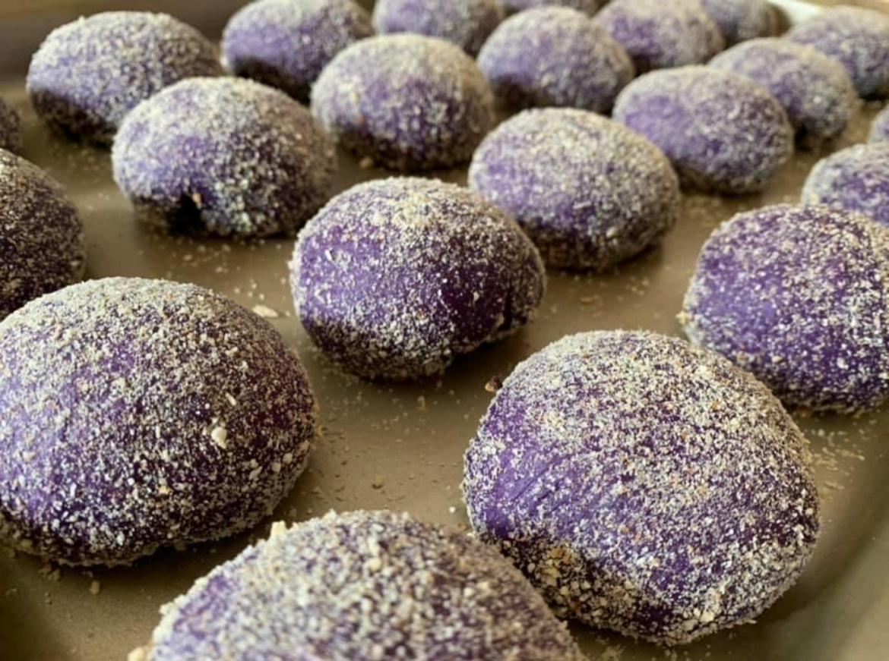

Hot Ube Pandesal

Description
I'm sharing my version of the hot ube pandesal.
We ate for breakfast as kids and even for merienda (snack time), with hot chocolate or warm milk.
I love food with ube flavor, so I incorporated it into my favorite breakfast bread.>
I know there are many pandesal recipes online, but I hope you try this and let me know what you think.
Thank you! Serve hot with or without the spread of your choice.
Warm leftovers in a toaster oven before serving for better taste.
Ingredients:
- 1 ½ cups 2% milk
- ½ cup unsalted butter
- 2 eggs
- 1 teaspoon of salt
- 1 (4 ounce) packet purple yam powder, or more to taste
- 3 ½ teaspoons bread machine yeast
- ½ cup unseasoned bread crumbs, or as needed
Steps:
- Pour milk into a microwave-safe bowl.
- Heat in the microwave until warm, about 1 minute. Place butter in a microwave-safe bowl. Heat in the microwave until melted, about 30 seconds.
- Place eggs in a bowl; cover with warm water for 1 minute. Drain and crack into a bowl; beat lightly with a fork.
- Place warm milk, melted butter, beaten eggs, salt, bread flour, purple yam powder, and bread machine yeast into a bread machine in the order listed. Run "Dough" cycle.
- Preheat the oven to 375 degrees F (190 degrees C).
- Transfer dough to a greased bowl. Deflate dough with your fist. Cut into 24 equal pieces. Roll each piece into a ball.
- Pour bread crumbs into a shallow plate; roll balls of dough in bread crumbs until coated. Arrange close together, slightly touching, in an ungreased baking pan.
- Bake in the preheated oven until tops are golden brown, about 15 minutes.